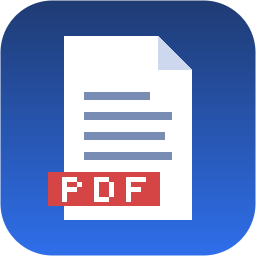

Créez, modifiez, organisez et numérisez vos documents de cours — sans connexion.
Astuce : glissez-déposez vos fichiers n'importe où dans la fenêtre.
L'administrateur a désactivé SknEDU-studio pour .
Contactez votre administrateur si vous pensez qu'il s'agit d'une erreur.